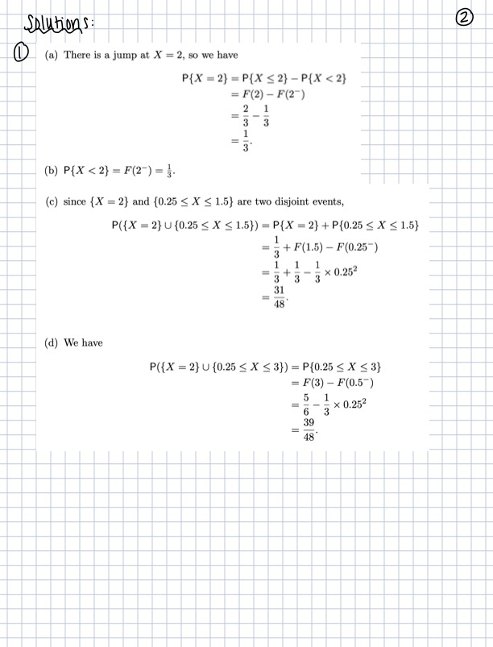
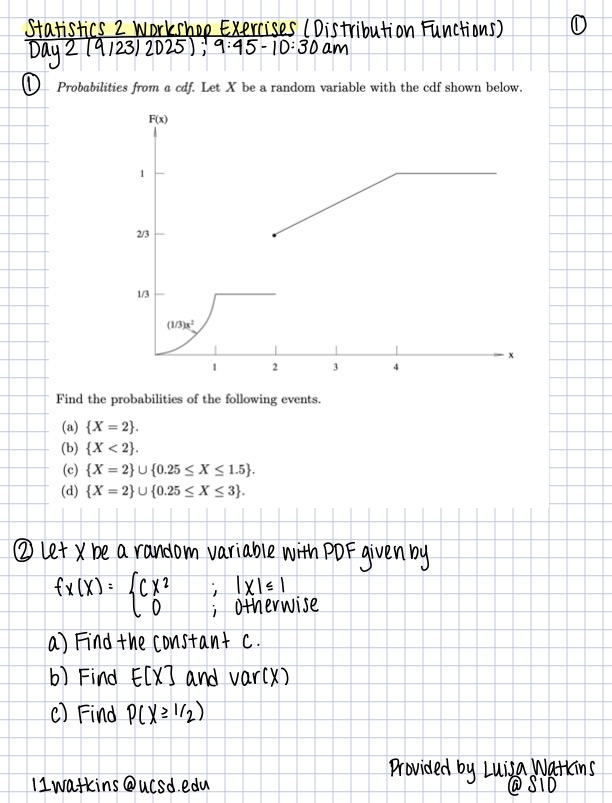
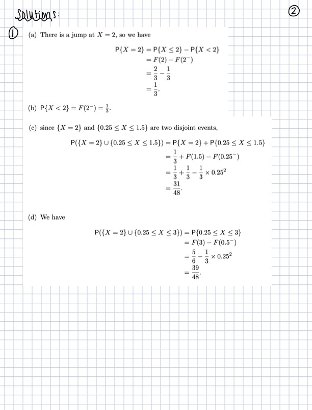
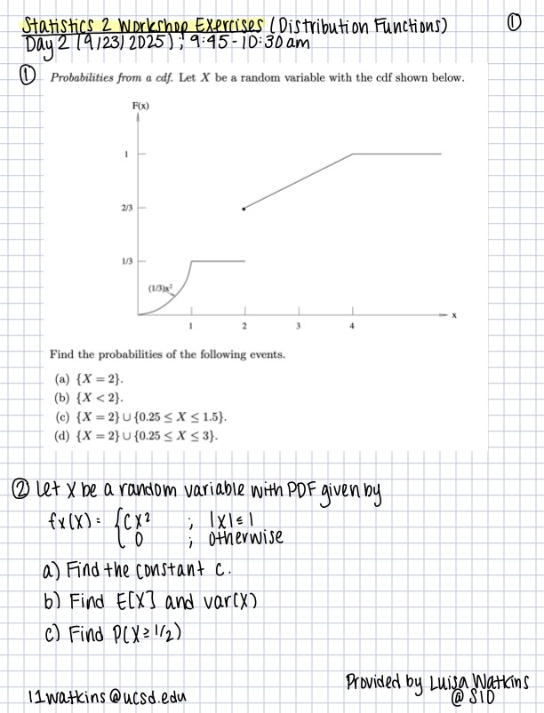

Distribution Functions
Instructor: Luisa Watkins, l1watkins@ucsd.edu (SPIESS 212)
TA: Kathryn Chen, ksc005@ucsd.edu
Lecture notes inspired by Paul Siegel’s ECE 250 course notes.
Note: These are the full comprehensive notes, but the class will cover only the highlights.
Introduction
We just revewed basic probability and random variables. If we step back and think about the random variable \(X\),we can define the probability measure \(P_X\) for an event \(E\) in the possible event space for \(X\). I won’t dive too deep into the theory here, but with probability measure \(P_X(E)\), we can use existing axioms of probability to find \(P_X(E)\) for any interval \(-\infty<a<b<\infty\) :
This is since a certain set of outcomes can give us the event \(E\).
It’s enough to consider intervals of the form \((-\infty,x], x \in \mathbb{R}\).
This leads us to the…
Cumulative Distribution Function (CDF)
for \(x \in \mathbb{R}, F_X(x) = P_X((-\infty,x])=P(X≤x)\)
Properties of CDF
\(F_X(x) \geq 0, \forall x \in \mathbb{R}\)
\(F_X(x)\) is monotonically non-decreasing: \(F_X(a) \leq F_X(b)\) for \(a < b\)
\(lim_{x \rightarrow -\infty} F_x(x) = 0\); \(lim_{x \rightarrow \infty} F_x(x) = 1\)
\(F_X(a^{+}) = lim_{x \rightarrow a^{+}} F_X(x) = F_X(a)\)
\(P(X=a) = F_X(a^{+}) - F_X(a^{-})\), \(F_X(a^{-}) = lim_{x \rightarrow a^{-}} F_X(x)\)
Example: Flip a biased coin, with \(P(0)=1-p\), \(P(1)=p\). Let \(X\) be the value of the flip. The CDF \(F_x(x)\) is
Discrete Random Variable
The random variable \(X\) is discrete if the CDF consists of steps at a countable set of numbers, denoted \(\mathscr{X}\), as in the last example:
determines \(\mathscr{X}\) completely, where we call \(p_X(x)\) the probability mass function (PMF). The relationship with the CDF is then:
where \(u(x)= \begin{cases} 0,& x<0\\ 1,& x≥0 \end{cases}\) is the unit step function.
** examples found in handout! **
Continuous Random Variable
For our purposes, we will focus on the continuous random variable \(X\), which has a continuous CDF \(F_X(x)\). Then the CDF can be expressed as
where $f_X(x) is the probability density function (PDF), which was covered in the last section.
If \(F_X(x)\) is everywhere differentiable, then \(f_X(x) = \frac{d}{dx} F_X{x} = lim_{\delta x \rightarrow 0} \frac{F(x + \delta x) - F(x)}{\delta x} = lim_{\delta x \rightarrow 0} \frac{P(x < X \leq x + \delta x)}{\delta x}\)
** examples found in handout! **
Properties of the PDF
\(f_X(x) \geq 0, \forall x \in \mathbb{R}\)
\(\int_{-\infty}^{\infty} f_X(x) = 1\)
for any event \(A \subset \mathbb{R}, P(X \in A) = \int_{X \in A} f_X(x) dx\)
\(P(a < X \leq b) = P(a < X < b) = P(a \leq X < b) = P(a \leq X \leq b) = \int_a^b f_X(x) dx\)
Expected Value
We can also analyze a random variable \(X\) by finding its “average value”, or expected value \(E[X]\).
For a discrete random variable \((X \sim p_X(x))\),
For a continuous random variable \((X \sim f_X(x))\),
Note: If \(f_X(x)\) is symmetric about \(x=m\), then \(E[X]=m\).
The Fundamental Theorem of Expectation
Discrete:
\(X \sim p_X(x), Y \sim g(X) \sim p_Y(y)\),
Continuous:
\(X \sim f_X(x), Y \sim g(X) \sim f_Y(y)\),
Properties of Expectation
if \(g(x) \geq 0\), with respect to \(1\), then \(E[g(X)] \geq 0\)
constant function: \(g(x) = c \rightarrow E[c] = c\)
scalable: \(g(x) = cx \rightarrow E[cX] = cE[x]\)
additive: \(g(x) = g_1(x) + g_2(x) \rightarrow E[g(X)] = E[g_1(X) + g_2(X)] = E[g_1(X)]+ E[g_2(X)]\)
3 & 4 use linearity of expectation!!
Second Moment
Discrete:
Continuous:
Variance:
** examples in handout! **
Exercises
 


